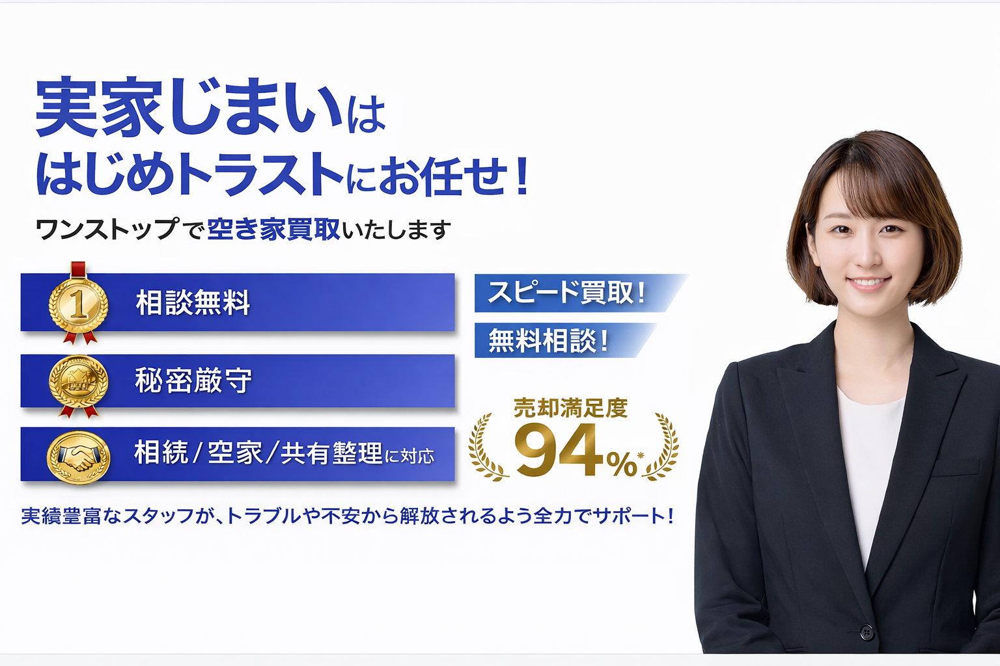
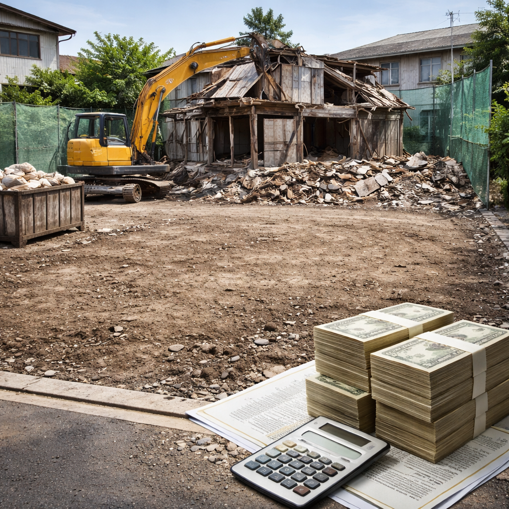
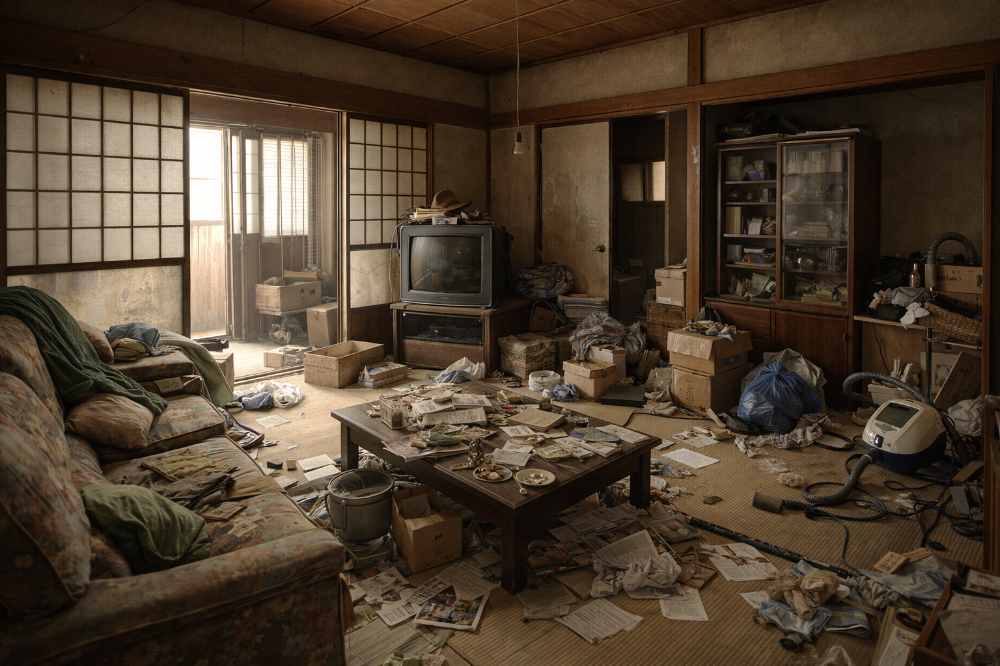
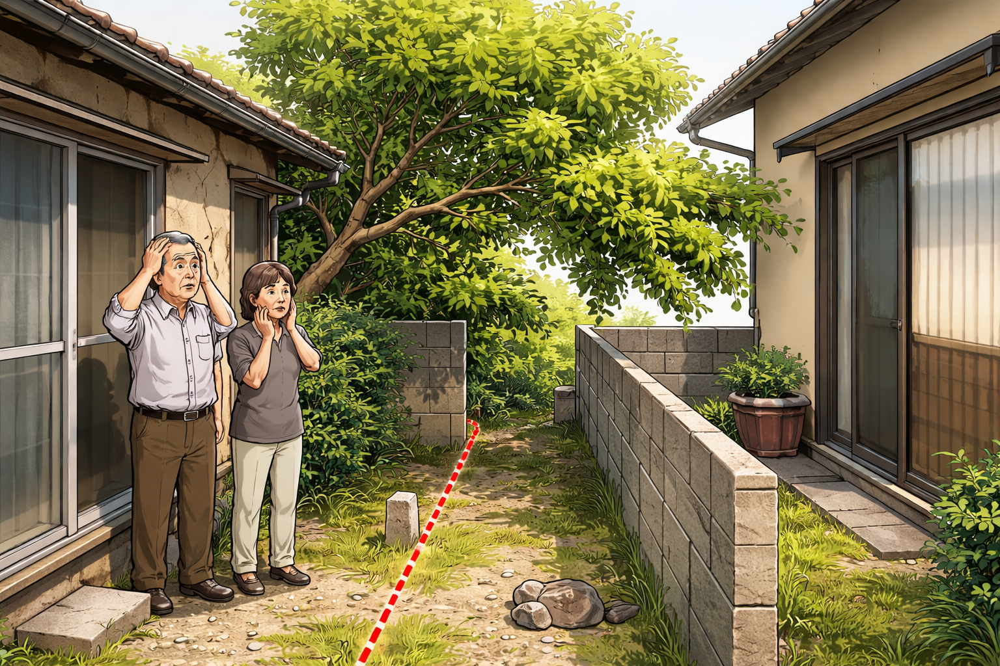

空家・相続不動産の整理と選択肢のご提案を行う不動産会社です。
売却を決める前のご相談から、丁寧に伴走いたします。

相続で突然空家を持つことになり、何から手を付ければいいか分からない
遠方で管理できず、気になりながら放置してしまっている
売るか残すか、気持ちの整理がつかない
片付けや修繕が大変そうで動けない
仲介と買取の違いが分からず、相談先も決められない
「売らされそう」で不動産会社に相談しづらい
空家が放置されるのは無責任だからではありません。
多くの方が、「まだ困っていない」「判断が重い」「誰に相談すべきか不明」という理由で止まってしまいます。
まずは、売却の決断より先に "状況を整理する" ことから始めましょう。
売却を決めなくても大丈夫です。
空家の状態・名義・ご希望（早く整理したい／近隣に知られたくない等）を整理するだけでも前に進めます。
空家は住んでいなくても、税金や維持コストが積み重なり、放置するほどリスクが大きくなります。
固定資産税・都市計画税に加え、草刈りや清掃、管理委託費など、目に見えない維持コストが毎年積み重なっていきます。
湿気、カビ、シロアリ、雨漏り…。人が住まない家ほど痛みやすく、放置すればするほど資産としての価値が損なわれていきます。
不具合が進むと「仲介では難しい」「大幅な修繕が必要」と言われ、いざ手放そうとした時に希望通りの売却ができなくなります。
空家は時間が経つほど、費用・手間・不安が増えやすい不動産です。状態が悪化して手遅れになる前に、今の状況を客観的に把握することが大切です。
将来どうするかを決める前に、まずは現在の物件価値やリスクを整理しませんか？あなたの不動産の「これから」を一緒に考えます。
私たちは、空家を「今すぐ売るべき」とは考えていません。空家の対応には、保有・活用・解体・売却など複数の選択肢があり、状況によって最適解は変わります。大切なのは、焦って決めることではなく、現況のまま取れる手段を知り、負担が増えない順番で整理することです。相談は、状況確認だけでも問題ありません。
「売る・残す・壊す」ではなく、どの順番で考えると負担が少ないかを整理します。
将来使う予定がある場合は保有も選択肢です。ただし、税金や管理の手間、劣化リスクを現実的に見積もる必要があります。

古家だからといって、すぐ解体が正解とは限りません。解体費用が先に発生し、更地後の活用・売却方針が定まらないと負担が残ります。解体は「売却可能性を確認した後」に検討しても遅くありません。
仲介：時間をかけて高値を狙う。内見・片付け等の負担が出やすい
買取：不動産会社が直接買い取り。早く整理しやすく、現況のまま進められることもある
どれが正解かではなく、あなたの期限・負担・物件状況に合わせて選ぶことが重要です。
空家特有の難しさを前提に、整理から伴走します
空家の相談では、次のような理由で「動けない」「断られた」というケースが少なくありません。


株式会社はじめトラストは、こうした前提を踏まえ、解体ありきにせず、現況のまま取れる選択肢を整理します。仲介・買取の両面から比較し、「高く売る」だけでなく「早く・確実に終える」出口も含めて提案できます。
査定＝売却ではありません。確認だけでも問題ありません。
状況整理のための「目安把握」でも大丈夫です。
売却判断は最後でOK！
所在地（市区町村まで可）／状況（相続・空家期間など）
お困りごと、期限、共有の有無、片付け状況など
仲介／買取／保有／解体の順番を比較
売却を決めた場合だけでOK。無理に進めません
「何をどうすればいいか分からない」段階でも、遠慮なくご相談ください。
Q. 相続登記がまだでも相談できますか？
A. 可能です。方針整理や段取りの相談から始められます。
Q. 片付けが終わっていません。現況のままでも大丈夫？
A. 条件によりますが、現況のまま対応できるケースもあります。まず状況確認を行います。
Q. 共有名義で兄弟と話が進みません。
A. 共有の状況整理から可能です。負担が増えない進め方をご案内します。
Q. 近所に知られずに進めたいです。
A. 可能な範囲で配慮して進めます。状況により進め方をご提案します。
Q. とりあえず価格だけ知りたいのですが？
A. はい、目安把握だけでも問題ありません。査定＝売却ではありません。
空家は「決断」より先に「整理」をすることで、選択肢が増え、負担も軽くなります。売るかどうかは、整理してから決めれば問題ありません。
まずは、現況と選択肢を確認するところから始めませんか。
以下のフォームからお気軽にご相談ください。